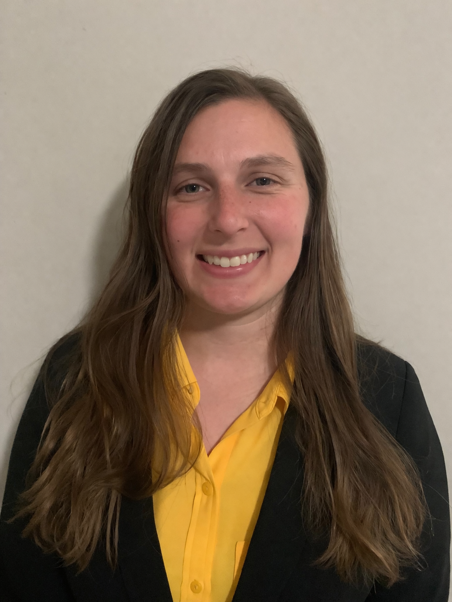
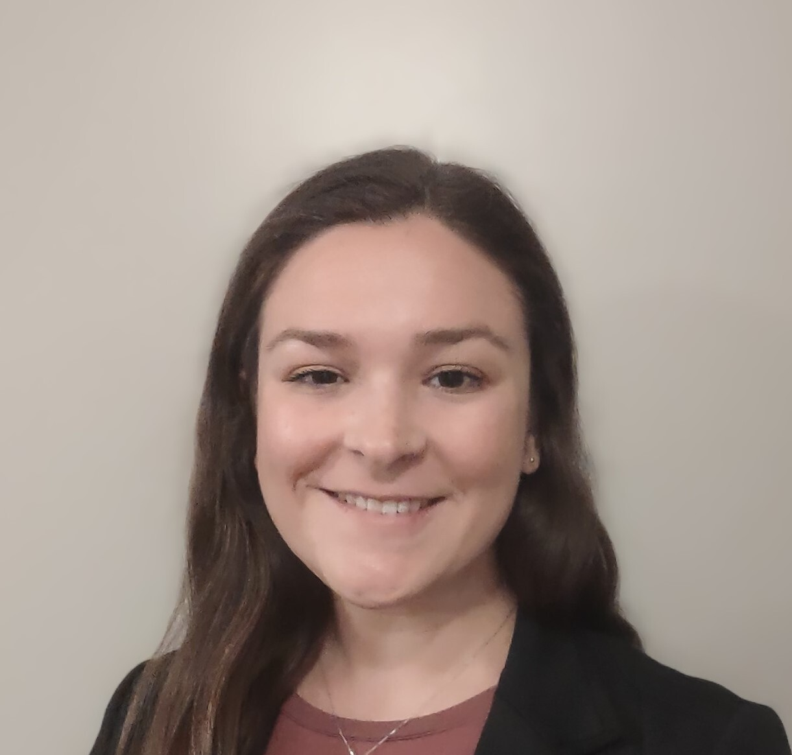
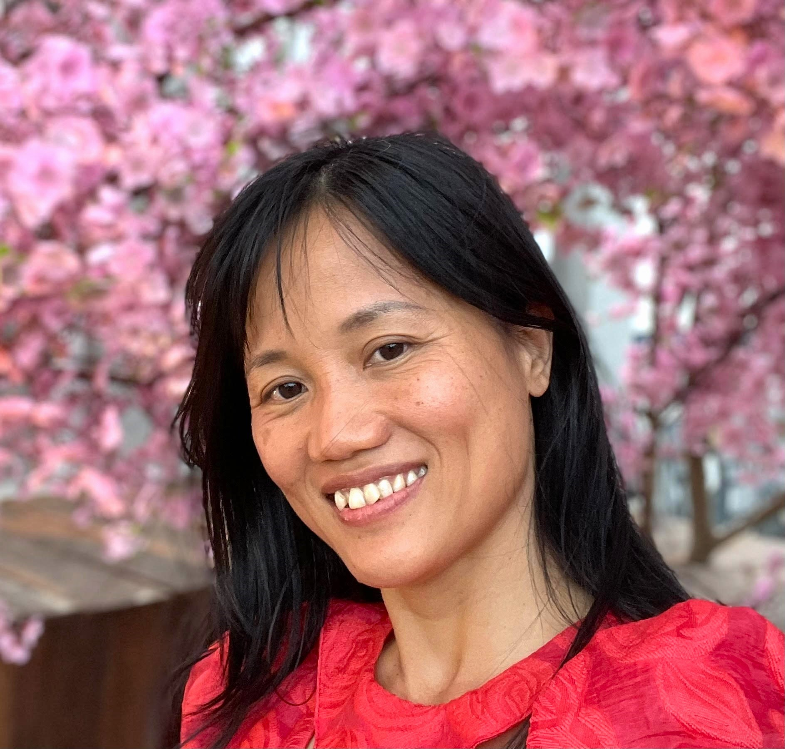

Meet Your Evaluator

Principal Evaluator & Owner
Principal Evaluator
Dr. Randi Sims earned her Ph.D. in Engineering and Science Education at Clemson University and leads Quality Evaluation Designs as its principal evaluator. With over 8 years of experience in STEM higher education program evaluation, she brings deep expertise in both qualitative and advanced quantitative methods to every project she takes on.
Randi's work centers on advancing equity, belonging, and persistence in research and learning environments. She has led and contributed to a host of professional evaluations across institutions ranging from K-12 to higher education. She has developed or supported more than 15 state and national grant proposals, including those funded by the National Science Foundation. As an expert in mixed methodology, Randi applies advanced statistical analysis in R and integrates qualitative approaches into complex research designs.
What sets Randi apart is her commitment to relationships. She partners with research teams from planning through dissemination, ensuring every deliverable is actionable, on time, and within budget. That same collaborative instinct carries into her mentorship work, where she has guided 90+ undergraduate, 10+ graduate, and 4 research faculty on their path to becoming educational researchers. Randi's dedication to her clients and mentees is evident in the long-term partnerships she builds and the success of those she supports.
Our Network
QED works with a network of experienced senior and junior consultants who support evaluation and research projects under QED's direction.
Senior Consultant • Founder
Founder of Quality Evaluation Designs with over 30 years of experience in program evaluation and educational research. Dr. Lichtenstein brings deep expertise in NSF-funded projects, STEM education initiatives, and higher education research programs.

Consultant
Trained as a learning scientist with an emphasis in human development across the lifespan, Abby has conducted evaluations on multiple NSF-funded projects with Quality Evaluation Designs since 2022. She brings expertise in mixed- and multi-method designs, program evaluation, and lifelong learning.

Consultant
Mrs. Ta is an evaluator who supports research and evaluation activities across QED-affiliated projects through data collection, analysis, and reporting. She holds advanced degrees in Mechanical Engineering and Engineering Education from institutions in Vietnam and the United States, including Arizona State University (ASU). Her seven years of teaching experience at a Technical College and nine years supporting research and evaluation at ASU and QED provides a strong foundation in education, assessment, and continuous improvement.
Work With Randi
Whether you are navigating your first grant proposal or need a seasoned evaluation partner for a long-term project, Randi would love to hear from you.